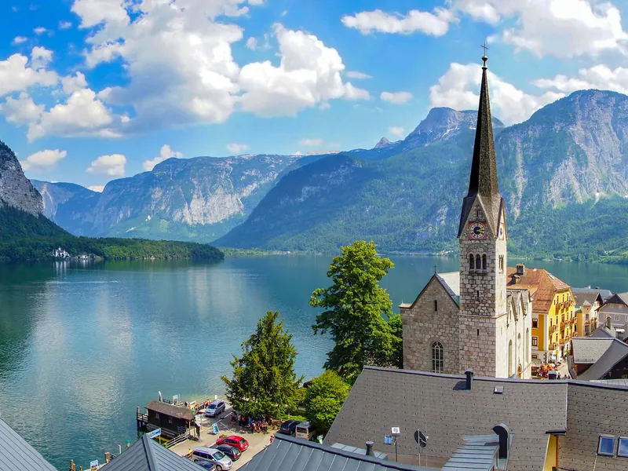
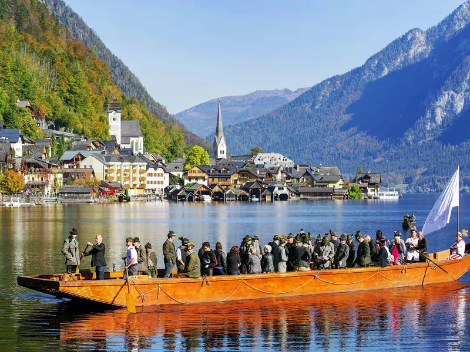
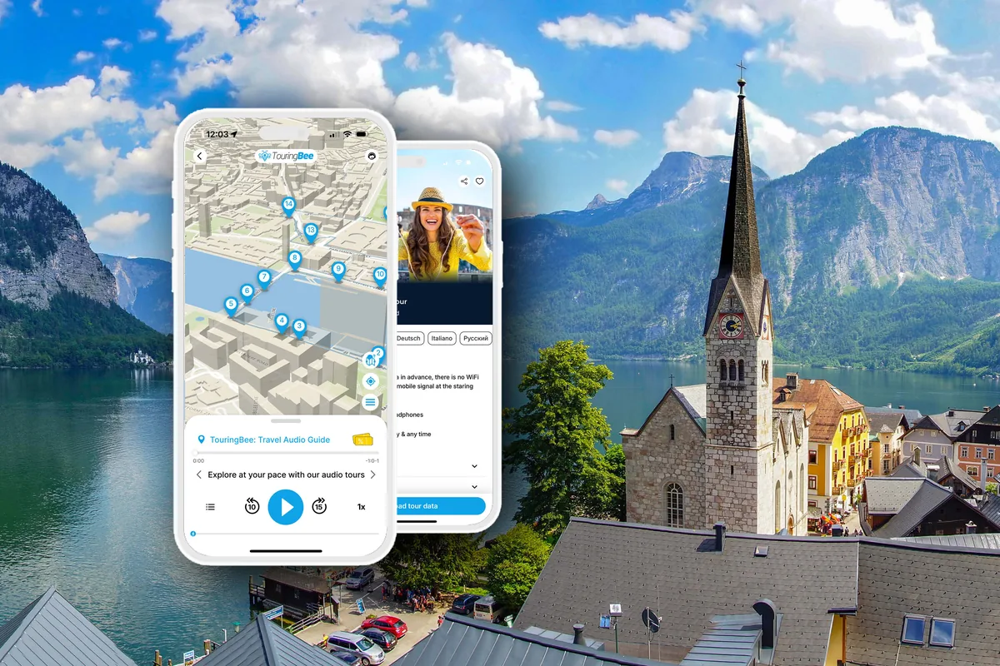

Przewodnik po Hallstatt → Wszystkie przewodniki
Hallstatt z Wiednia: pociąg, samochód czy wycieczka jednodniowa?
Hallstatt nie leży blisko Wiednia. Dzieli je trzy i pół do czterech godzin drogi w jedną stronę — każdym istniejącym środkiem transportu.
To liczba, wokół której kręci się cały dzień, i większość stron chowa ją pod zdjęciami. Siedem–osiem godzin w drodze to cena biletu. Czy zostanie ci w wiosce osiem godzin, czy czterdzieści minut, zależy wyłącznie od tego, który pociąg wybierzesz i którą wycieczkę zarezerwujesz — a oba warianty kosztują mniej więcej tyle samo twojego dnia.
To nie jest więc tekst o tym, czy Hallstatt jest wart zachodu. To tekst o tym, jak nie jechać ośmiu godzin do wioski po to, żeby obejrzeć ją przez szybę autokaru.
Godziny na miejscu są tu towarem deficytowym — i to jest argument za tym, żeby chodzić po wiosce ze słuchawką w uchu, a nie z mapą w ręku. Audioprzewodnik TouringBee prowadzi przez siedemnaście punktów od przystani promu po punkt widokowy światowego dziedzictwa w jakieś dziewięćdziesiąt minut, a mapa i dźwięk działają offline, więc napięte popołudnie zostaje spacerem, zamiast zamienić się w nawigowanie.
Planujesz całą wyprawę? Zacznij od kompletnego przewodnika po Hallstatt, a tu wróć po logistykę.

Cztery opcje w porównaniu
| Jak | Czas | Koszt | Godziny w wiosce | Główny minus |
|---|---|---|---|---|
| Pociąg przesiadka w Attnang-Puchheim | 3:00–4:00 w jedną stronę plus prom | Od 9 € przy wczesnej rezerwacji; zwykle około 37 € | Do mniej więcej ośmiu, jeśli złapiesz pierwsze i ostatnie połączenie | Zależność od rzadkich połączeń |
| Samochód | Około 3:15 w jedną stronę, mniej więcej 285 km | Paliwo, winieta 12,80 €, parking 20 € | 8–10, jeśli wyjedziesz o szóstej | Sześć godzin albo więcej za kierownicą |
| Zorganizowana wycieczka jednodniowa | 12–14 godzin od drzwi do drzwi; około 3,5 h autokarem w każdą stronę | Od około 60 € do ponad 200 € | Często poniżej dwóch. Jedna szeroko sprzedawana wycieczka podaje czterdzieści minut. | Mało czasu dla siebie |
| Nocleg w okolicy | Ta sama droga, przejechana raz | Doliczyć pokój w Obertraun albo Bad Goisern | Wieczór, wczesny ranek i pełny dzień | Jedna noc więcej |
Opcje różnią się przede wszystkim tym, ile z długiego dnia zostaje na sam Hallstatt. Pociąg jest sztywny: drugi odcinek kursuje mniej więcej co dwie godziny, więc dzień układa się wokół trzech–czterech konkretnych odjazdów. Samochód kupuje wczesny start i kosztuje sześć godzin jazdy. Wycieczka zdejmuje z ciebie wszystkie decyzje, a przy niektórych programach — także większość wioski. Nocleg w okolicy to jedyny wariant, w którym widzisz Hallstatt poza godzinami jednodniowych wypadów.
Pociągiem: wszystko zależy od drugiego odcinka
Bezpośredniego pociągu nie ma. Każda trasa kolejowa z Wiednia to te same dwa odcinki plus łódź.
Odcinek pierwszy — Wien Hauptbahnhof do Attnang-Puchheim. To część łatwa: korytarz Westbahn, Railjet i pociągi intercity, około 198 km. Serwisy rezerwacyjne podają najszybszy przejazd na 1:47, a typowy na mniej więcej dwie godziny, przy czym pociągi jeżdżą przez cały dzień, a nie kilka razy na dobę. Nic na tym odcinku nie zepsuje ci planu.
Odcinek drugi — Attnang-Puchheim do Hallstatt. Ten decyduje o całym dniu. Linia Salzkammergut (REX, jak nazywa ją oficjalna strona wioski dla odwiedzających) pokonuje około 64 km w mniej więcej godzinę i kwadrans. W obowiązującym rozkładzie, ważnym od 14 grudnia 2025, pociągi kursują w odstępach około dwugodzinnych: pierwsze przyjazdy do Hallstatt koło szóstej rano, ostatnie sensowne odjazdy powrotne koło szóstej wieczorem, plus jeden po ósmej. Przy kilku pozycjach stoją odsyłacze z ograniczeniami, więc uczciwa instrukcja brzmi tak: otwórz wyszukiwarkę ÖBB dla swojej daty, zanim ustalisz cokolwiek innego.
Odcinek trzeci — prom. Stacja Hallstatt leży na przeciwległym brzegu, a przeprawa jest częścią podróży, nie dodatkiem do niej. Przewoźnik podaje około siedmiu minut i 4,00 € za przejazd w jedną stronę, skomunikowany z pociągami; strona wioski pisze, że prom kursuje między stacją a centrum niemal co godzinę. To zresztą zdecydowanie najlepszy sposób, żeby zobaczyć Hallstatt po raz pierwszy: w miarę zbliżania się wioska wychodzi ze ściany skalnej i składa się w całość, czego parking nie potrafi.
Cała podróż, od peronu w Wiedniu do rynku w wiosce: od około 3:30 do 4:15, zależnie od tego, jak wypadnie przesiadka. Agregatory pokazują jedenaście połączeń dziennie, najszybsze 3:01, średnie 3:57, najtańsze bilety z wyprzedzeniem od 9 €, typowe około 37 €.
Dwie wersje dnia z pociągiem
Wsiądź w jeden z pierwszych porannych pociągów z Wiednia, a na Marktplatz staniesz między wpół do dziesiątej a dziesiątą. Wracaj wczesnowieczornym połączeniem, a w Wiedniu będziesz koło dwudziestej drugiej. To mniej więcej osiem godzin w Hallstatt za mniej więcej siedem i pół w pociągach — naprawdę dobry dzień.
Wyjedź z Wiednia o dziewiątej i wróć tym o czwartej, a za te same siedem i pół godziny drogi dostaniesz cztery godziny w wiosce. Dwugodzinny takt nie karze delikatnie — karze w porcjach po dwie godziny.
Jedna rzecz, która działa z Salzburga, tutaj nie działa. Tanie bilety na pociągi regionalne, na których stoi oszczędny dzień z Salzburga, z Wiednia są bezużyteczne: szybki odcinek obsługuje Railjet, a przejechanie go połączeniami regionalnymi dołożyłoby godziny, których nie masz. Z Wiednia kupuj bilet z wyprzedzeniem.

Samochodem: trasa jest prosta, przyjazd już nie
Oficjalna strona Hallstatt o dojeździe podaje trasę wprost: autostradą A1 West do węzła Regau, dalej przez Gmunden, Bad Ischl i Bad Goisern. Z Gmunden liczy około godziny. Z Wiednia wychodzi mniej więcej 285 km i około trzech godzin z kwadransem bez postojów, a na tej trasie nie ma odcinka Sondermaut — wystarczy zwykła winieta. Jeśli wynajmujesz samochód na ten wyjazd, odbiór w mieście zamiast na lotnisku zwykle oszczędza nadkładania drogi.
Trzy rzeczy do sprawdzenia przed przekręceniem kluczyka.
Winieta i internetowa zasada, którą wszyscy mylą. ÖAMTC podaje ceny na 2026 rok: 12,80 € za dziesięć dni i 9,60 € za jeden dzień, wyłącznie w wersji cyfrowej. Przeczytasz też, że winieta cyfrowa kupiona przez internet staje się ważna dopiero osiemnastego dnia, z powodu prawa do odstąpienia od umowy. To prawda — ale ASFINAG pisze wprost, że termin ten nie dotyczy winiety 1-dniowej i 10-dniowej, czyli dokładnie tych dwóch, które kupiłbyś na ten wyjazd. Te są ważne od razu. Osiemnastodniowe oczekiwanie dotyka osób kupujących online winietę dwumiesięczną albo roczną; kup ją na stacji benzynowej lub w punkcie poboru opłat, a będzie ważna natychmiast. Tak czy inaczej, sprawdź na potwierdzeniu datę początku ważności, zanim ruszysz.
Do Hallstatt nie wjedziesz. Zabytkowe centrum zamyka szlaban. Oficjalna strona parkingów wymienia P1 w dwadzieścia minut pieszo i P2 w piętnaście, a P3 dobre czterdzieści minut dalej, oraz taryfę: 5 € za pierwszą godzinę, 15 € za siedem do dwunastu godzin i 20 € za bilet całodniowy. Do centrum kursuje bus wahadłowy od 9:00 do 19:00. Zgubiony bilet kosztuje 40 €.
Przepisy zimowe obowiązują naprawdę. Od 1 listopada do 15 kwietnia: opony zimowe na wszystkich kołach albo łańcuchy na osi napędowej zawsze wtedy, gdy na drodze jest śnieg, błoto pośniegowe lub lód, a mandaty zaczynają się od 35 €. Auta z austriackich wypożyczalni są zwykle obute prawidłowo, ale lepiej to potwierdzić, niż założyć.
Samochód realnie kupuje ci wyjazd o szóstej rano i samą dolinę — Gmunden nad Traunsee, drogę wzdłuż Hallstätter See — oraz swobodę zostania do ostatniego światła. Kosztuje cię tyle, że ostatnią godzinę długiego dnia spędzasz za kierownicą; tego nikt nie wlicza, wyjeżdżając rano.
Zorganizowane wycieczki: co właściwie kupujesz
Wycieczki z Wiednia trwają dwanaście do czternastu godzin od drzwi do drzwi i zaczynają się od około 60 €, a wersje w małych grupach i premium przekraczają 200 €. Sam autokar to około trzy i pół godziny w każdą stronę. Większość rusza z centrum między siódmą a wpół do ósmej.
Oto liczba, której trzeba szukać, i rzadko bywa wydrukowana. Jedna szeroko sprzedawana trzynastogodzinna wycieczka planuje — we własnym opublikowanym programie — czterdzieści minut czasu wolnego w Hallstatt plus rejs łodzią albo wizytę w kostnicy na dwadzieścia pięć do trzydziestu minut. Większość pozostałych ofert podaje łączny czas trwania i listę przystanków, ale żadnej liczby mówiącej, ile stoisz w samej wiosce.
Częściowo dlatego, że najlepiej sprzedające się wycieczki łączą Hallstatt z Salzburgiem, z jeziorami Salzkammergut albo z Melkiem i Admontem. Każdy dodatek musi się skądś wziąć.
Przed rezerwacją patrz więc nie na łączny czas trwania, tylko na czas zaplanowany w samym Hallstatt. W niektórych programach wioska jest jednym z kilku przystanków, a nie główną częścią dnia. Wycieczka to dobra odpowiedź, jeśli nie prowadzisz, jeśli jest styczeń i alpejskie drogi cię niepokoją, jeśli masz dokładnie jeden wolny dzień i zero ochoty na rozkłady jazdy albo jeśli po prostu chcesz mieć logistykę z głowy. Możesz porównać wycieczki jednodniowe z Wiednia i sprawdzić tę liczbę w każdym programie.
Dwie opcje, które większość stron pomija
Jedź z Salzburga. Z Salzburga do Hallstatt jedzie się koleją poniżej trzech godzin, a samochodem około czterdziestu pięciu minut od zjazdu Golling. Jeśli Salzburg i tak jest w twoim planie Austrii, warto porównać wyjazd stamtąd: droga jest znacznie krótsza. Szczegóły w naszym przewodniku o dojeździe z Salzburga.
Przenocuj w okolicy. Niekoniecznie w samym Hallstatt, gdzie ceny pokoi są temu odpowiednie: Obertraun leży dziesięć minut dalej, Bad Goisern nieco dalej, oba na tej samej linii i oba wyraźnie tańsze na nocleg. Jedna noc przestawia całą arytmetykę. Dostajesz wioskę wieczorem i wczesnym rankiem, poza godzinami, które zajmują jednodniowe wycieczki.
Planujesz dzień w Hallstatt z Wiednia?
Wiedeński wątek, o którym nikt nie wspomina
Jeśli jedziesz z Wiednia, trasa ma nieoczekiwany epilog. Znaczna część tego, co wykopano w Hallstatt, znajduje się w wiedeńskim Muzeum Historii Naturalnej, którego Dział Prehistorii bierze udział w wykopaliskach w regionie od ponad stu lat. Wśród eksponatów są znaleziska z kopalni soli i ze słynnego cmentarzyska, od którego wzięła nazwę epoki żelaza kultura halsztacka.
Hallstatt i Wiedeń łączy więc coś więcej niż droga: wioska pokazuje miejsce, a muzeum w mieście, z którego wyjeżdżasz, pokazuje, co archeolodzy z tego miejsca wydobyli.
Jak wykorzystać krótki dzień w wiosce
Pobierz audioprzewodnik jeszcze w Wiedniu — w Hallstatt mapa, GPS i komentarz działają offline. Siedemnaście punktów, około dziewięćdziesięciu minut, od przystani promu po punkt widokowy światowego dziedzictwa.
Jak naprawdę wygląda dzień z pociągiem
Godziny poniżej to kształt dnia, nie rozkład jazdy — prawdziwy zbuduj w wyszukiwarce ÖBB dla swojej daty, bo odcinek Salzkammergut zmienia się z sezonem i ma odsyłacze.
- Wczesny ranek — Wien Hauptbahnhof, kierunek zachodni. Śniadanie w pociągu; to ten dwugodzinny odcinek i jedyna wygodna część dnia.
- Attnang-Puchheim — przesiadka na REX linii Salzkammergut. Jeśli przesiadka jest napięta, to tutaj wygrywa się albo przegrywa dzień.
- Przedpołudnie — stacja Hallstatt, przeciwległy brzeg. Prom na drugą stronę, około siedmiu minut, 4 €.
- Późne przedpołudnie — przyjazd do Hallstatt i spacer po wiosce. Od przystani przez Marktplatz na punkt widokowy światowego dziedzictwa idzie się około dziewięćdziesięciu minut w tempie, które pozwala patrzeć.
- Południe — kopalnia soli i Skywalk, jeśli je zarezerwowałeś: kosztują trzy godziny plus kolejkę; albo kostnica i muzeum: kosztują jedną.
- Popołudnie — muzeum, kostnica albo wolniejszy drugi spacer, zależnie od tego, który pociąg powrotny trzymasz.
- Wczesny wieczór — prom z powrotem, pociąg na wschód. W Wiedniu koło dwudziestej drugiej.
Jeśli ta lista wygląda na napiętą, to dlatego, że jest. Odejmij kopalnię soli, a zrobi się przyjemnie; dodaj drugą atrakcję, a od południa będziesz patrzeć na zegarek.
Najczęstsze pytania
Ile trwa dojazd z Wiednia do Hallstatt?
Około trzech i pół do czterech godzin w jedną stronę. Pociągiem to jedna przesiadka w Attnang-Puchheim plus krótki prom; agregatory pokazują najszybsze połączenie nieco ponad trzy godziny, a typowe około czterech. Samochodem to mniej więcej 285 km i około trzech godzin z kwadransem bez postojów.
Czy Hallstatt to realna wycieczka jednodniowa z Wiednia?
Tak, ale dzień jest długi: na drogę tam i z powrotem idzie około siedmiu–ośmiu godzin. Wyjedź wcześnie, a będziesz miał w Hallstatt pełnych kilka godzin; wyjedź przed południem, a ta sama droga kupi ci około czterech.
Czy jest bezpośredni pociąg z Wiednia do Hallstatt?
Nie. Każda trasa kolejowa wymaga przesiadki w Attnang-Puchheim na linię Salzkammergut, a potem przeprawy promem przez jezioro, bo stacja leży na przeciwległym brzegu.
Ile kosztuje pociąg?
Bilety z wyprzedzeniem zaczynają się od około 9 €, typowe kosztują około 37 € w jedną stronę. Prom to 4,00 € w jedną stronę. Wczesna rezerwacja opłaca się tu bardziej niż na większości austriackich tras, bo szybki odcinek obsługuje Railjet.
Czy lepiej wziąć zorganizowaną wycieczkę?
Wycieczka jest wygodna, jeśli wolisz nie zajmować się przesiadkami ani nie prowadzić. Sprawdź jednak czas zaplanowany w samym Hallstatt: przy niektórych wycieczkach jest wyraźnie krótszy, niż sugeruje łączny czas trwania — jedna popularna trzynastogodzinna wycieczka podaje czterdzieści minut czasu wolnego, a większość ofert w ogóle tej liczby nie drukuje.
Czy mogę wjechać samochodem do Hallstatt?
Nie. Zabytkowe centrum jest zamknięte dla ruchu odwiedzających. Zaparkuj na P1 (około dwudziestu minut pieszo) albo P2 (około piętnastu); bilet całodniowy kosztuje 20 €, a bus wahadłowy kursuje 9:00–19:00. Potrzebujesz też austriackiej winiety — 12,80 € za dziesięć dni w 2026 roku. Osiemnastodniowe oczekiwanie, o którym mogłeś czytać, dotyczy winiety dwumiesięcznej i rocznej kupowanej online, a nie 1-dniowej i 10-dniowej.
Czy lepiej jechać z Salzburga?
Droga z Salzburga jest znacznie krótsza. Jeśli Salzburg i tak jest częścią twojego planu Austrii, porównaj oba warianty, zanim zaplanujesz Hallstatt z Wiednia.
Czytaj dalej
- Hallstatt: kompletny przewodnik
- Hallstatt z Salzburga: wszystkie sposoby dojazdu
- Jarmark bożonarodzeniowy w Hallstatt: czy warto planować wokół niego wyjazd?
Werdykt
Z Wiednia Hallstatt to cały dzień: droga tam i z powrotem zajmuje około siedmiu–ośmiu godzin. Dlatego wczesny start ma tu większe znaczenie niż prawie gdziekolwiek indziej — zostawia znacznie więcej dnia dla samej wioski. Jeśli taki dzień wygląda na zbyt napięty, nocleg w okolicy albo wyjazd z Salzburga dają dużo więcej miejsca.
A jeśli jedziesz tam i z powrotem w jeden dzień, to właśnie godziny w Hallstatt warto chronić. Spacer z TouringBee trwa około dziewięćdziesięciu minut: siedemnaście punktów od przystani po punkt widokowy, z mapą, GPS-em i dźwiękiem offline.
Spacer po Hallstatt — audioprzewodnik
- 17 nagrań przygotowanych przez historyka, z poczuciem humoru
- Mapa offline z GPS — roaming niepotrzebny
- Start dowolnego dnia i o dowolnej porze, z przerwą na obiad
- Ilustracje, dzięki którym wiadomo, na co właściwie patrzeć
- Działa na iPhonie i Androidzie, w aplikacji TouringBee
Wstęp do kostnicy, kopalni soli i muzeum trzeba opłacić osobno.

Zwiedź Hallstatt z audioprzewodnikiem — 9,99 €
Godziny, ceny i czasy otwarcia na tej stronie sprawdzono w październiku 2026 roku w rozkładzie ÖBB nr 170 (ważnym od 14 grudnia 2025), na stronie wioski Hallstatt, u ASFINAG i ÖAMTC oraz w Muzeum Historii Naturalnej w Wiedniu. Czasy przejazdu na linii Salzkammergut zmieniają się wraz z okresem rozkładowym i mają ograniczenia w odsyłaczach — sprawdź wyszukiwarkę ÖBB dla swojej daty, zanim cokolwiek zarezerwujesz. Część linków to linki afiliacyjne: jeśli zarezerwujesz przez nie, możemy otrzymać niewielką prowizję bez dodatkowego kosztu dla ciebie. Nie wpływa to na nasze rekomendacje.